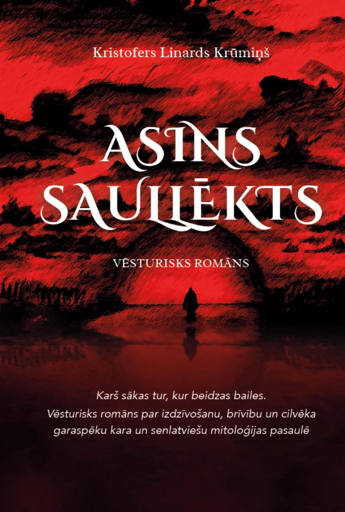
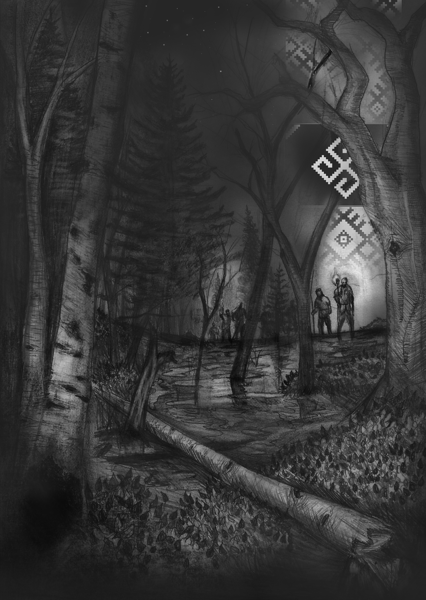

Vēsturisks fantāzijas piedzīvojums
Asins saullēkts
Senās Livonijas mežos, purvos un kauju laukos dzimst stāsts par izdzīvošanu, brīvību un nesalaužamu cerību.

Par grāmatu
Stāsts, kurā tumsā iedegas pirmā dzirkstele.
Senās Livonijas mežos, purvos un kauju laukos dzimst stāsts par izdzīvošanu un brīvību. Pēc nežēlīga sirojuma jauneklis Jānis pamostas viens, ievainots un bez atmiņām. Katrs solis svešajā biezoknī atmodina atmiņu drumstalas par cilti, ģimeni un ugunīm, kas aprija mājas.
Kad kļūst skaidrs, ka bruņinieks Herrmanis ar savu karaspēku joprojām medī izdzīvojušos, Jānim, brālim Miķelim un citiem ciltsbiedriem jāizvēlas: bēgt vai stāties pretī. Vēsturiski fantāzisks piedzīvojums, kurā baltu mitoloģijas elpa un senču gudrība savijas ar spraigām kaujām un izdzīvošanas spriedzi.
Līdzās asmens šķindēšanai skan klusāki brīži: sēru smagums, baiļu tvērums, brālības spēks un neatlaidīgs cerības pavediens, kas nepārtrūkst pat vistumšākajā naktī. Nelielas cilts drosme pārtop sacelšanās dzirkstelē — par tiesībām dzīvot savā zemē un runāt savā balsī.
Ilustrācijas
Autora zīmējumi

Citāts
“Kad tumsai pienāk gals, pirmais sārtais rīts kļūst par zvērestu nekad vairs nekrist ceļos.”